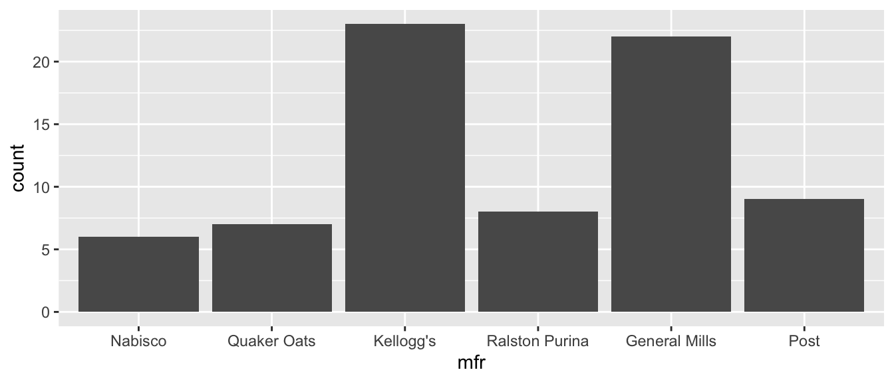
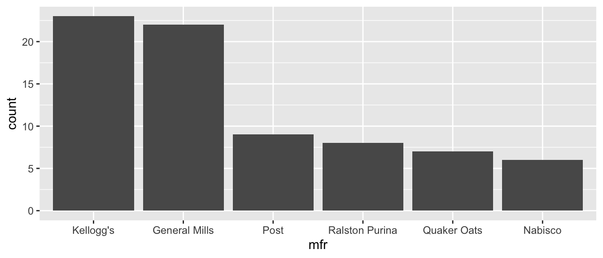
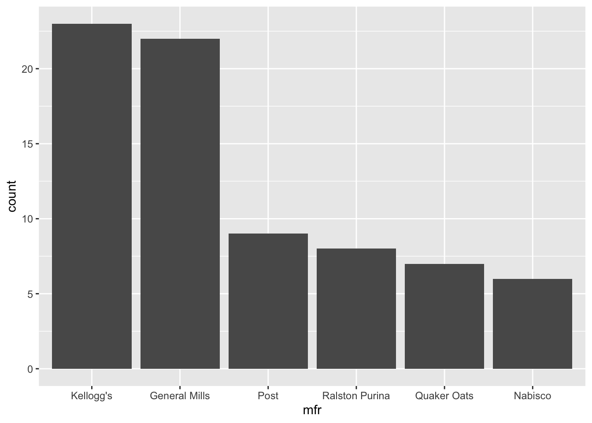
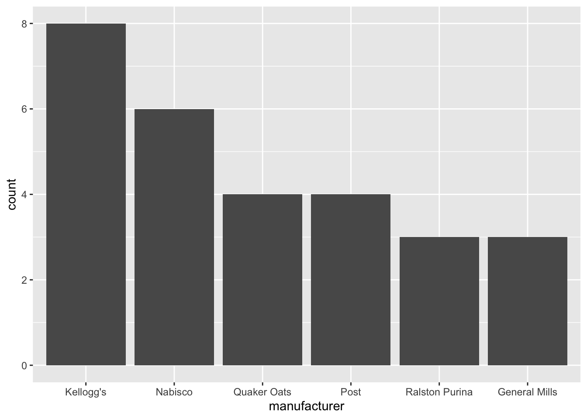
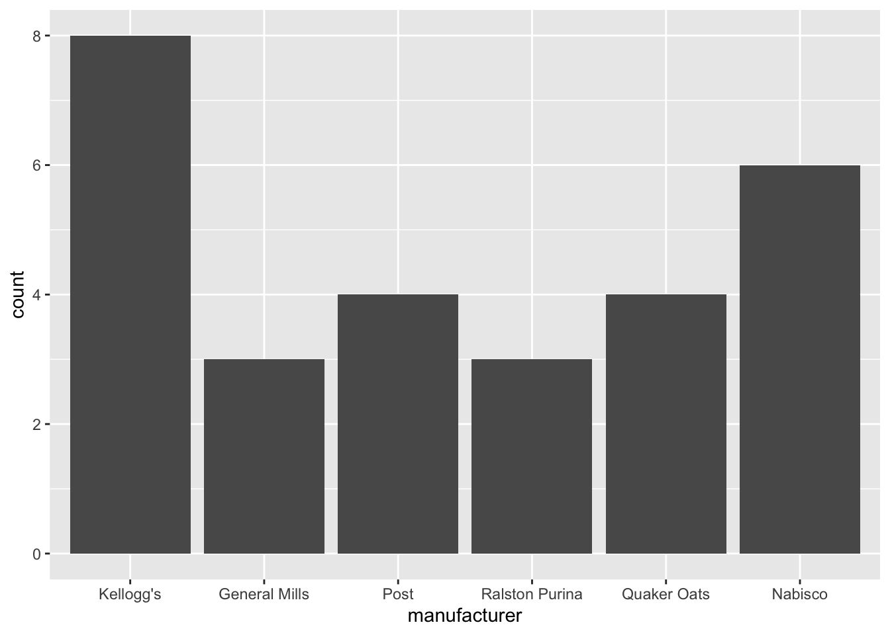

install.packages("tidyverse")Introduction to Tidyverse
Note
This is Part 3 of a series on sociophonetic data analysis.
Introduction
Working with data can be super frustrating. I recall a time in grad school when I spent something like 6–8 hours to get my data transformed into the format I wanted, and that was using a super clunky workaround. Soon after that, I learned about a set of packages called “the tidyverse.” More importantly, I read the online book, R for Data Science written by Garrett Grolemund and Hadley Wickham (freely available at http://r4ds.had.co.nz) that explains how to use these packages and the functions within them. This has completely changed how I work in R and allows me to do some really power data transformation with ease.
In the next section, I discuss a little bit about what the tidyverse is, but if you want to get to the good stuff, feel free to skip it.
What is the tidyverse?
According to its website (tidyverse.org), “The tidyverse is an opinionated collection of R packages designed for data science. All packages share an underlying philosophy and common APIs.” Let’s break that down.
It’s a collection of R packages—When you install the
tidyversepackage, all you’re doing is installing several other packages that fall its umbrella. Some of the packages that are part oftidyverseincludedplyr,tidyr, andggplot2, which are among the most popular R packages ever. There are others that are super useful likereadxlthat are part of the tidyverse, but don’t come installed automatically with thetidyversepackage, so you’ll have to load them explicitly.They share an underlying philosophy and common APIs—This is one of the reasons that makes the tidyverse so great: all the packages seamlessly integrate and work together harmoniously. There’s nothing worse than having to modify your dataframe in some way in order to get it to work for some function and then modify it again to get it work with some other function in another package. With the tidyverse, you can jump from one of its packages to another and send data around and nothing will ever get mad at you.
They are designed for data science—A lot of what R can do is for statistical modeling on your data. Tidyverse isn’t heavy on statistics, but it can help you every step of the way otherwise. You can read in your data, make any modifications, and visualize it with no problem. When it actually comes to fancy statistical models though, you’ll have to find more specialized packages. This is not to say that the tidyverse is deficient in any way: reshaping and tidying your data is no small feat and the tidyverse makes this a lot easier.
They are opinionated—The primary author of many authors these packages, Hadley Wickham, is very open about how they are created, and says that this is just one way to work with data in R. You’re certainly welcome to work with your data another way, but using the tidyverse is not the only solution: it’s just one opinion of how it should be best done.
There’s a ridiculous amount to cover when teaching the tidyverse. Just ggplot2 alone would take dozens of workshops to cover everything. The possibilities are nearly endless and I obviously can’t teach you everything in just a short online tutorial. To give you an idea of what functions in the tidyverse can do, here’s a brief summary of some of its packages (all written by Hadley Wickham with addition authors in parentheses):
ggplot2is a very popular suite for visualizing data. Unlike other visualizations you might do,ggplot2allows for pretty much infinite customization in your plots, which is really handy if you have nit-picky details you want to control.dplyr(Romain Francois, Lionel Henry, and Kirill Müller) lets you manipulate your data by doing things like adding and removing columns, filtering and subsetting your data, and summarizing your data (such as getting the average of some value per group within your data).tidyr(Lionel Henry) lets you reshape your data from “wide” to “tall” format. It’s likereshapeandreshape2(also written by Hadley Wickham), but in my opinion it does the job better with code that’s easier to interpret.readxl(Jennifer Bryan) makes allows you to read in Excel files directly into R without the need to convert to .csv firstforcatscomes with a bunch of functions for working with categorical data.stringrmakes it easier to work with text in your data.
There are many other packages that are part of the tidyverse that handle more specific tasks like working with particular data types. There are also ones that are more for the R programmer and can help you publish your R scripts into your own libraries. For now, I’ll stick with just the basics, but be aware that there is much, much more.
Installation
Just like any other R package, installing tidyverse is straightforward.
You only need to run this once and then it’s on your computer.
As always, installing it doesn’t make it automatically available to R though, so you’ll need to explicitly tell R you’ll be working with the package, using the library function.
library(tidyverse)── Attaching core tidyverse packages ──────────────────────── tidyverse 2.0.0 ──
✔ dplyr 1.1.4 ✔ readr 2.1.5
✔ forcats 1.0.0 ✔ stringr 1.5.1
✔ ggplot2 4.0.0 ✔ tibble 3.3.0
✔ lubridate 1.9.4 ✔ tidyr 1.3.1
✔ purrr 1.0.4
── Conflicts ────────────────────────────────────────── tidyverse_conflicts() ──
✖ dplyr::filter() masks stats::filter()
✖ dplyr::lag() masks stats::lag()
ℹ Use the conflicted package (<http://conflicted.r-lib.org/>) to force all conflicts to become errorsThe colorful messages just let you know what other packages are being loaded at the same time (there should be nine: dplyr, forcats, ggplot2, lubridate, purrr, readr, stringr, tibble, and tidyr), and what versions. Alternatively, you can read in these packages individually and everything will be fine, but by loading tidyverse you can take care of those all in one step.
You may also see some conflicts. What this says is that there are functions called filter and lag in both the dplyr and stats package (stats comes preinstalled with R and is automatically loaded because it contains a lot of useful functions). Normally, functions from add-on libraries will be “masked by” the base functions, meaning the new one won’t be used. However, here, tidyverse has done the opposite, and the filter() function in dplyr is overriding the one in stats.
So without further ado, let’s see how we can get data in and out of R.
Getting data in and out of R
Unless you plan on generating your own data, you’ll need to get your data into R, usually as one of the first things you do. We’ve already seen how to get your data in in a previous tutorial, but there is a tidyverse way of doing it that’s very similar. There are several ways we can do this, and the function you use will depend on what kind of file you’re reading in. Here, I’ve broken it down into .csv, .txt, and .xlsx files. For this section I’ll be drawing from Chapter 11 “Data Import” from R for Data Science, which can be read here: http://r4ds.had.co.nz/data-import.html.
Reading in a .csv file
If you’ve read data into R before, you’ve probably used the standard read.csv function (which has a period (.) in the function name). This one works just fine and you can get by perfectly well with it. However, tidyverse’s read_csv (with an underscore), has some additional perks that the standard function doesn’t come with. To show the first one, let’s go ahead and read in some data. If you have something on your computer, feel free to load it in like this. (Obviously, this code won’t work on your computer: you’ll have to change the path to some directory where you have data.)
# For Macs
my_data <- read_csv("/Users/joeystanley/Desktop/path/to/data/menu.csv")
# For Windows
my_data <- read_csv("C:\\Users\\joeystanley\\Desktop\\path\\to\\data\\menu.csv")If your data is in the same folder as the script you’re working with, you can just type the name of the file.
my_data <- read_csv("menu.csv")If you don’t have anything ready, feel free to use this sample data. We’ll start with one one we used in the first ggplot2 workshop, the McDonald’s data. It is available for free at Kaggle.com, where you can get complete nutritional information. I’ve got a subset of this data on my website, so you can just read in this file directly from there into R by typing in the URL.
menu <- read_csv("http://joeystanley.com/data/menu.csv")Rows: 260 Columns: 6
── Column specification ────────────────────────────────────────────────────────
Delimiter: ","
chr (2): Category, Item
dbl (4): Oz, Calories, Fat, Sugars
ℹ Use `spec()` to retrieve the full column specification for this data.
ℹ Specify the column types or set `show_col_types = FALSE` to quiet this message.The first perk of read_csv is that it gives you some output showing you how it parsed each column of your spreadsheet. As we learned in the first ggplot2 workshop, not all data should be treated the same. Numbers are very different from text, and R (as well as you) should be aware of what data types are contained in your file so that it (and you) can work with it the best way possible. There are some heuristics that determine how read_csv parses your data which we won’t get into here, but it’s nice to see what the final result was just to make sure that numbers get treated as numbers, text as text, etc. Later in this workshop we’ll see one way to change it in case the function got something wrong.
The second perk of read_csv is that it turns your data into what’s called a “tibble”, which is tidyverse’s version of a dataframe. At its core, it is actually a dataframe, just like anything else in R, but it also has some additional perks. One major difference between dataframes and tibbles can be seen when you print them. When you print a regular dataframe, it’ll vomit out everything. You get all rows (even if there are many of them) and all columns, which can be hard to read if your screen isn’t wide enough to display them since they’ll spill over into multiple rows. Here’s our menu data printed out as a dataframe.
as.data.frame(menu) Category Item Oz
1 Breakfast Egg McMuffin 4.8
2 Breakfast Egg White Delight 4.8
3 Breakfast Sausage McMuffin 3.9
4 Breakfast Sausage McMuffin with Egg 5.7
5 Breakfast Sausage McMuffin with Egg Whites 5.7
6 Breakfast Steak & Egg McMuffin 6.5
7 Breakfast Bacon, Egg & Cheese Biscuit (Regular Biscuit) 5.3
8 Breakfast Bacon, Egg & Cheese Biscuit (Large Biscuit) 5.8
9 Breakfast Bacon, Egg & Cheese Biscuit with Egg Whites (Regular Biscuit) 5.4
10 Breakfast Bacon, Egg & Cheese Biscuit with Egg Whites (Large Biscuit) 5.9
Calories Fat Sugars
1 300 13 3
2 250 8 3
3 370 23 2
4 450 28 2
5 400 23 2
6 430 23 3
7 460 26 3
8 520 30 4
9 410 20 3
10 470 25 4I’ve truncated the output to save space, but on your screen you’ll see that this displays the entire contents of the dataframe. When we print the tibble version, it’s a lot shorter.
menu# A tibble: 260 × 6
Category Item Oz Calories Fat Sugars
<chr> <chr> <dbl> <dbl> <dbl> <dbl>
1 Breakfast Egg McMuffin 4.8 300 13 3
2 Breakfast Egg White Delight 4.8 250 8 3
3 Breakfast Sausage McMuffin 3.9 370 23 2
4 Breakfast Sausage McMuffin with Egg 5.7 450 28 2
5 Breakfast Sausage McMuffin with Egg Whites 5.7 400 23 2
6 Breakfast Steak & Egg McMuffin 6.5 430 23 3
7 Breakfast Bacon, Egg & Cheese Biscuit (Regular B… 5.3 460 26 3
8 Breakfast Bacon, Egg & Cheese Biscuit (Large Bis… 5.8 520 30 4
9 Breakfast Bacon, Egg & Cheese Biscuit with Egg W… 5.4 410 20 3
10 Breakfast Bacon, Egg & Cheese Biscuit with Egg W… 5.9 470 25 4
# ℹ 250 more rowsWhen you look at a tibble, you only peek at the data. You get the first 10 rows and only as many columns as can fit on your screen without spilling over into a new column. If there are additional columns, they’re listed at the bottom. You also get to see what datatype each column is at the top of each column below the column names. This printing feature makes it easy to examine just a portion of your data without flooding your R Console.
Finally, using read_csv is actually about 10 times faster than the regular read.csv function. If you work with very large datasets, this is a very good thing. Furthermore, if it does take more than about five seconds to read in your file, you’ll actually get a little progress bar down in your R Console saying how much it’s done and how long it has taken. This is nice to see so you know that R is making progress and hasn’t crashed.
Side note, since the menu items are so long, I’m going to truncate it for display purposes only. You don’t have to do this.
menu$Item <- str_sub(menu$Item, 1, 24)
head(menu)# A tibble: 6 × 6
Category Item Oz Calories Fat Sugars
<chr> <chr> <dbl> <dbl> <dbl> <dbl>
1 Breakfast Egg McMuffin 4.8 300 13 3
2 Breakfast Egg White Delight 4.8 250 8 3
3 Breakfast Sausage McMuffin 3.9 370 23 2
4 Breakfast Sausage McMuffin with Eg 5.7 450 28 2
5 Breakfast Sausage McMuffin with Eg 5.7 400 23 2
6 Breakfast Steak & Egg McMuffin 6.5 430 23 3Reading in an Excel file
In the Intro to R Workshop, I said that it’s possible to load Excel files directly into R. Before learning how to do this, I did a lot of work in Excel, but then I would have to save it as a .csv, which just involved so many steps of clicking “Save As…”, switching to .csv, and then Excel would give me all these warning messages saying I’ll lose formatting. Even then, I could only save one sheet at a time and I had two different identical datasets saved to my computer. It just just such a hassle.
Reading in Excel files is possible thanks to the read_excel function which is in the readxl package. There are actually several packages that do the same thing, but this one is part of the tidyverse. However, it does not come standard in the tidyverse library, so you’ll have to load it explicitly.
install.packages("readx") # If you haven't already.
library(readxl)The syntax of read_excel is very similar to read_csv, which is a trend you’ll notice over and over in the tidyverse. All you need to do is specify the path to the file itself. Unfortunately, in the case of Excel files, you can’t read them directly from a website like you can with csv files, so you’ll have to download the data and then load it from your computer from wherever you saved your file. You can just go to http://joeystanley.com/data/snoozing.xlsx and it’ll automatically download.
snooze <- read_excel("/Users/joeystanley/Desktop/snoozing.xlsx")This file contains some fake data I created on how sleeping patterns. We’ll get to it later in the workshop. The crucial thing now is that it’s an Excel file and it can be read in directly into R which is pretty cool. By default, this reads in the first sheet of the Excel file. You can change this by adding the sheet argument and providing either the name of the sheet, or the sheet number. This particular file contains two sheets: the first has all the data and the second is nonsense. We can specify that we want the second sheet (called “blank”) by indicating it:
blank <- read_excel("/Users/joeystanley/Desktop/snoozing.xlsx",
sheet="blank")The perks of using read_excel are essentially the same as using read_csv: your data is saved as a tibble and it’s much faster.
There is much more that you can do with reading data into R, not only with just those two functions, but with many other specialized functions in readr and readxl, including those for reading in specific data formats. For example, you can specify column names or column types as you read it in so you don’t have to change them later. I’ll let you explore those on your own.
Your turn!
The challenge
Look at the help for read_excel (by running the command ?read_excel) and explore some of the other arguments you can add to the function.
The solution
Some of the arguments you can add to the function include the following. Note that many of these also apply to read_csv.
col_names = c("example1", "example2")—This is nice if you have some spreadsheet that has column names you don’t like. They might be very long, or contain spaces or other funny characters that are hard to work with in R. I recently worked with a file that had many, very long, very similar column names, so I used this argument to change those column names right away. You just need to supply a list of names in the order they appear in the spreadsheet.col_typesis a way to make sure R gets the data type for each column correct from the start. This might be good if there are lots of factors in your data, or if R consistently gets a column wrong, or if you’re just tired of the message when reading data in. For example, if you wanted to make sure theCategorycolumnmenudata was a factor and not a character, you could do this:::: {.cell}
read_csv("http://joeystanley.com/data/menu.csv", col_types = cols(Category = col_factor(levels = NULL))):::
This is handy, but it takes some getting used to. For more help, look at section 11.4.2 of R for Data Science.
I’ve had to use
skip = 3when I read in some census data. The file I downloaded had three lines of citation information that weren’t actually part of the data. The real table started at line 4, so I was just able to skipped them without modifying the original Excel file.
There are others, but these are the ones I’ve used recently.
Reading in a .txt file
Even though they’re probably the simplest type, .txt files are a little bit trickier to work with. All the .txt files have been “tab-delimited”, meaning that it was essentially a spreadsheet but instead of commas separating each cell, there were tabs. This filetype is actually useful because if some of your columns contain commas (city + state, sentences, etc.), using a tab makes sure those commas don’t separate columns unexpectedly.
The function for this is read_delim. It looks very similar to read_csv and read_excel, except you need to specify the delim argument. If the file is separated by tabs, you can use "\t" for that, which is “computer talk” for a tab character. The cereal data, which we used in the second ggplot2 data, is also stored on my website as a tab-delimited file. This is another dataset made available through Kaggle.com that contain nutritional information of 80 different kinds of cereal.
cereal <- read_delim("http://joeystanley.com/data/cereal.txt", delim = "\t")Note that you may have gotten that long message about what kinds of columns were read in. This is a nice case where using the col_types argument would be good because we actually have two changes to make. And if you specify just one column, the message goes away for the rest of them.
cereal <- read_delim("/Users/joeystanley/Desktop/github/joeystanley/data/cereal.txt",
delim = "\t",
col_types = cols(
type = col_factor(levels = NULL),
mfr = col_factor(levels = NULL)
))Saving R data to your computer
So we’ve covered how to get data into R, it might be useful to look at how to get data out of R. Often you’ll make all sorts of changes to your data and it would be nice to save that so you don’t have to do that all over again. Or sometimes there will be useful output or transformations of your data that are super useful to hold on to for later.
The main function I use is write_csv, which is straightforward. First, provide the dataset you want to save, and then specify where you want it to be saved.
write_csv(snooze, "/Users/joeystanley/Desktop/snooze.csv")The comma-separated value is recommended because it’s easiest to use later by R or other programs. But if you want to save it as a .txt file, just use write_delim, with the extra argument of specifying what should separate the columns.
write_delim(snooze, "/Users/joeystanley/Desktop/snooze.txt", delim = "\t")I don’t know of a way to create Excel files in R. They are actually quite a bit more complicated because they have to store information about all sorts of stuff like potential colors, borders, fonts, etc. I’m sure someone has created a package to do that, but you’re on your own for figuring out how.
Your turn!
Try reading in a dataset of your own into R. Check the file time and use the appropriate command. You may use any additional arguments as you see fit. Make sure that everything looks good when you View your data.
The select function
Whenever I read data into R, the very next step is always to process the data a little further. Out-of-the-box, it’s never exactly how I want it. We saw some of this processing with the col_types argument in the read_* family of functions. In this section, we’ll look at how to reorder or remove columns using the select function.
Reorder columns
You would think that reorder columns in R would be straightforward. But, as far as I’m aware, it’s not easy using regular R functions. Let’s take our McDonald’s data.
head(menu)# A tibble: 6 × 6
Category Item Oz Calories Fat Sugars
<chr> <chr> <dbl> <dbl> <dbl> <dbl>
1 Breakfast Egg McMuffin 4.8 300 13 3
2 Breakfast Egg White Delight 4.8 250 8 3
3 Breakfast Sausage McMuffin 3.9 370 23 2
4 Breakfast Sausage McMuffin with Eg 5.7 450 28 2
5 Breakfast Sausage McMuffin with Eg 5.7 400 23 2
6 Breakfast Steak & Egg McMuffin 6.5 430 23 3Let’s say we wanted to just move things around a little bit so that the Item column is first instead of Category, and then you want Sugars to go before Calories. In base R, you accomplish this by referring the the column order:
menu[, c(2,1,3,6,4,5)]# A tibble: 6 × 6
Item Category Oz Sugars Calories Fat
<chr> <chr> <dbl> <dbl> <dbl> <dbl>
1 Egg McMuffin Breakfast 4.8 3 300 13
2 Egg White Delight Breakfast 4.8 3 250 8
3 Sausage McMuffin Breakfast 3.9 2 370 23
4 Sausage McMuffin with Eg Breakfast 5.7 2 450 28
5 Sausage McMuffin with Eg Breakfast 5.7 2 400 23
6 Steak & Egg McMuffin Breakfast 6.5 3 430 23This is fine, and actually quite succinct, but it has some problems. First, if there’re only six columns this isn’t a big deal to count all of them. But if you have dozens of columns, it can get tedious to sit there and count them, and then you’re bound to get something wrong anyway. Also, it’s not clear what the numbers refer to. Furthermore, if your original dataset changes and now you have a new column somewhere in the middle, everything will get completely messed up. With the select function (which is in the dplyr package), you can refer to the columns by name—and you don’t even need to put quotes around them:
select(menu, Item, Category, Oz, Sugars, Calories, Fat)# A tibble: 6 × 6
Item Category Oz Sugars Calories Fat
<chr> <chr> <dbl> <dbl> <dbl> <dbl>
1 Egg McMuffin Breakfast 4.8 3 300 13
2 Egg White Delight Breakfast 4.8 3 250 8
3 Sausage McMuffin Breakfast 3.9 2 370 23
4 Sausage McMuffin with Eg Breakfast 5.7 2 450 28
5 Sausage McMuffin with Eg Breakfast 5.7 2 400 23
6 Steak & Egg McMuffin Breakfast 6.5 3 430 23This is admittedly a bit more typing, but I think the clarity is worth it. With select, all you do is first type the name of the dataset you want to work with, and then just start listing columns, separated by commas. This overcomes all the problems with the base R way: you don’t have to sit and count a bunch of columns anymore (referring to names is easier than numbers), it’s clear what this does, and if you get a random new column in the middle, you still end up with the colum order you want.
Tangent: %>% (“the pipe”)
One of the handier things about the tidyverse is this cool function called “the pipe” (%>%). This is a way to rewrite your functions so that they’re a little bit easier and they focus more on what the functions are doing.
To give an example of what the pipe does, consider the following snippets of code that each produce identical outputs.
print("Hi, Mom!")
"Hi, Mom!" %>%
print()[1] "Hi, Mom!"round(mean(c(1, 2, 3, pi, 4)))
c(1, 2, 3, pi, 4) %>%
mean() %>%
round()[1] 3round(mean(c(1, 2, 3, pi, 4, NA), na.rm = TRUE), 1)
c(1, 2, 3, pi, 4, NA) %>%
mean(na.rm = TRUE) %>%
round(1)[1] 2.628What the pipe does is it takes whatever is on the left and makes it the first argument to whatever is on the right. For many functions, that first argument is the data that the functions works with. This is handy because it makes the dataset standout visually in the code, rather than it being buried deep within somewhere. This is especially evident when we have to nest multiple functions together or when there are arguments to the functions. The pipe separates all these out in a way that makes it clear what everything is doing and which arguments go with which function.
When you read the code, you can think of the pipe as “and then…”. So in the last example, you might read it as “take this list of values, and then find it’s mean (after removing NAs), and then round it (to three decimal places).”
The pipe is super handy for pretty much all tidyverse stuff. So for example, you could rewrite chunk of code above that used the select function as this:
menu %>%
select(Item, Category, Oz, Sugars, Calories, Fat)# A tibble: 260 × 6
Item Category Oz Sugars Calories Fat
<chr> <chr> <dbl> <dbl> <dbl> <dbl>
1 Egg McMuffin Breakfast 4.8 3 300 13
2 Egg White Delight Breakfast 4.8 3 250 8
3 Sausage McMuffin Breakfast 3.9 2 370 23
4 Sausage McMuffin with Eg Breakfast 5.7 2 450 28
5 Sausage McMuffin with Eg Breakfast 5.7 2 400 23
6 Steak & Egg McMuffin Breakfast 6.5 3 430 23
7 Bacon, Egg & Cheese Bisc Breakfast 5.3 3 460 26
8 Bacon, Egg & Cheese Bisc Breakfast 5.8 4 520 30
9 Bacon, Egg & Cheese Bisc Breakfast 5.4 3 410 20
10 Bacon, Egg & Cheese Bisc Breakfast 5.9 4 470 25
# ℹ 250 more rowsThis makes it even clearer because the only thing within the select parentheses are the column names themselves. In fact, because the pipe allows you to stack functions, you could even read in the data and then reorder it all in one block. The following snippet reads in data, reorders it, prints it out, and saves the result into the menu object.
menu <- read_csv("http://joeystanley.com/data/menu.csv") %>%
select(Item, Category, Oz, Sugars, Calories, Fat) %>%
print()# A tibble: 260 × 6
Item Category Oz Sugars Calories Fat
<chr> <chr> <dbl> <dbl> <dbl> <dbl>
1 Egg McMuffin Breakfast 4.8 3 300 13
2 Egg White Delight Breakfast 4.8 3 250 8
3 Sausage McMuffin Breakfast 3.9 2 370 23
4 Sausage McMuffin with Eg Breakfast 5.7 2 450 28
5 Sausage McMuffin with Eg Breakfast 5.7 2 400 23
6 Steak & Egg McMuffin Breakfast 6.5 3 430 23
7 Bacon, Egg & Cheese Bisc Breakfast 5.3 3 460 26
8 Bacon, Egg & Cheese Bisc Breakfast 5.8 4 520 30
9 Bacon, Egg & Cheese Bisc Breakfast 5.4 3 410 20
10 Bacon, Egg & Cheese Bisc Breakfast 5.9 4 470 25
# ℹ 250 more rowsAnother handy thing is that since it’s all being treated as one giant line of code, you can put your cursor anywhere in the entire block and run it, and it’ll do the whole thing for you. So you don’t need to highlight the whole block in order to run it.
Being able to do a whole bunch of stuff at once like this is really nice also because then you don’t have to keep track of multiple versions of the same data. You don’t need a menu and a menu_reordered or a menu_clean object: you can just do it all at once and skip the intermediate steps. Pretty handy. I would highly recommend getting used to the pipe because it will save you a lot of hassle.
Removing columns
Sometimes the data you read in has too many columns and you just want to get rid of them to make things easier. In base R, the way I learned how to remove a column was to set it equal to null:
data$bad_column <- NULLThat was fine if it was a one-off thing, but if there were many of them, it was kind of annoying to do. In tidyverse, you can actually also use the select function to do this. Let’s say we read in the menu data, but we don’t need to worry about the Oz column. We can easy remove it by putting a minus sign before it in select:
menu %>%
select(-Oz) %>%
print(n = 5)# A tibble: 260 × 5
Item Category Sugars Calories Fat
<chr> <chr> <dbl> <dbl> <dbl>
1 Egg McMuffin Breakfast 3 300 13
2 Egg White Delight Breakfast 3 250 8
3 Sausage McMuffin Breakfast 2 370 23
4 Sausage McMuffin with Eg Breakfast 2 450 28
5 Sausage McMuffin with Eg Breakfast 2 400 23
# ℹ 255 more rowsAlternatively, we can just list the columns we want to keep, and select will drop the rest:
menu %>%
select(Item, Category, Sugars, Calories, Fat) %>%
print(n = 5)# A tibble: 260 × 5
Item Category Sugars Calories Fat
<chr> <chr> <dbl> <dbl> <dbl>
1 Egg McMuffin Breakfast 3 300 13
2 Egg White Delight Breakfast 3 250 8
3 Sausage McMuffin Breakfast 2 370 23
4 Sausage McMuffin with Eg Breakfast 2 450 28
5 Sausage McMuffin with Eg Breakfast 2 400 23
# ℹ 255 more rowsIn fact, you can even just reorder things if you need, and the ones you don’t include will be silently dropped.
menu %>%
select(Fat, Calories, Item) %>%
print(n = 5)# A tibble: 260 × 3
Fat Calories Item
<dbl> <dbl> <chr>
1 13 300 Egg McMuffin
2 8 250 Egg White Delight
3 23 370 Sausage McMuffin
4 28 450 Sausage McMuffin with Eg
5 23 400 Sausage McMuffin with Eg
# ℹ 255 more rowsHowever, doing this is potentially troublesome for you down the road. If you decide you need that column you want at a later date, it’s not immediately obvious where it went. This is why you should comment your code to explain why things are written the way they are.
Additional select tricks
If you have only a few columns, it’s not too big of a deal to type them all out. But if you have many, it can get tedious, especially if you only need to make a couple changes. Fortunately, select has a way to specify multiple columns at once, analgous with how some R syntax works. In R, you can use a colon : to specify a range of things.
c(1, 2, 3, 10:20) [1] 1 2 3 10 11 12 13 14 15 16 17 18 19 20You can do a similar thing in select. If you want to include many adjacent columns, just use a colon between them:
menu %>%
select(Item, Oz:Fat)# A tibble: 260 × 5
Item Oz Sugars Calories Fat
<chr> <dbl> <dbl> <dbl> <dbl>
1 Egg McMuffin 4.8 3 300 13
2 Egg White Delight 4.8 3 250 8
3 Sausage McMuffin 3.9 2 370 23
4 Sausage McMuffin with Eg 5.7 2 450 28
5 Sausage McMuffin with Eg 5.7 2 400 23
6 Steak & Egg McMuffin 6.5 3 430 23
7 Bacon, Egg & Cheese Bisc 5.3 3 460 26
8 Bacon, Egg & Cheese Bisc 5.8 4 520 30
9 Bacon, Egg & Cheese Bisc 5.4 3 410 20
10 Bacon, Egg & Cheese Bisc 5.9 4 470 25
# ℹ 250 more rowsAs mentioned above, one downside of select is that if you forget to specify a column in select, it’ll silently disappear and you won’t know where it went until you do some further digging. Using the colon solves this problem to some extent because it’ll capture everything between those two columns, whether you meant to or not. You can also use the everything() function to select everything that you haven’t already done yet. This makes sure you don’t miss any:
menu %>%
select(Item, everything())# A tibble: 260 × 6
Item Category Oz Sugars Calories Fat
<chr> <chr> <dbl> <dbl> <dbl> <dbl>
1 Egg McMuffin Breakfast 4.8 3 300 13
2 Egg White Delight Breakfast 4.8 3 250 8
3 Sausage McMuffin Breakfast 3.9 2 370 23
4 Sausage McMuffin with Eg Breakfast 5.7 2 450 28
5 Sausage McMuffin with Eg Breakfast 5.7 2 400 23
6 Steak & Egg McMuffin Breakfast 6.5 3 430 23
7 Bacon, Egg & Cheese Bisc Breakfast 5.3 3 460 26
8 Bacon, Egg & Cheese Bisc Breakfast 5.8 4 520 30
9 Bacon, Egg & Cheese Bisc Breakfast 5.4 3 410 20
10 Bacon, Egg & Cheese Bisc Breakfast 5.9 4 470 25
# ℹ 250 more rowsSo the select function can do a lot. It’s probably just as easy as base R, but it might be a little bit clearer for you or another person to understand the code being used.
You turn!
The challenge
Read in one of your own datasets and play around with the select function. If you don’t have one ready, try working with the cereal dataset. Try putting the columns in a more logical order or removing ones you don’t need.
The solution
With the cereal data, there are some columns I don’t need all the time or that I don’t understand what they’re for. I can use select to remove them and then reorder things.
cereal %>%
select(name, rating, cups, calories:fiber) %>%
head()# A tibble: 6 × 9
name rating cups calories sugars protein fat sodium fiber
<chr> <dbl> <dbl> <dbl> <dbl> <dbl> <dbl> <dbl> <dbl>
1 100% Bran 68.4 0.33 70 6 4 1 130 10
2 100% Natural Bran 34.0 1 120 8 3 5 15 2
3 All-Bran 59.4 0.33 70 5 4 1 260 9
4 All-Bran with Extra F… 93.7 0.5 50 0 4 0 140 14
5 Almond Delight 34.4 0.75 110 8 2 2 200 1
6 Apple Cinnamon Cheeri… 29.5 0.75 110 10 2 2 180 1.5The mutate function
Another super common function that I use is mutate, which is in the dplyr package. This function can both create new columns and modify existing ones. Let’s see how it’s done.
Creating new columns
The cereal data we have is good because it lists a lot of nutritional information that you might find on the box. However, it doesn’t show any calculations of this data. Let’s say we want to see what the sugariest cereal is. Let’s make a quick tangent and look at the arrange function. Using arrange, we can sort our data (alphabetically or numerically) based on the values in some column. By default, it’ll put them from lowest to highest, but if we put a minus sign before the column name, it’ll sort it from highest to lowest.
cereal %>%
select(-mfr, -type, -shelf, -weight) %>%
arrange(-sugars) %>%
head()# A tibble: 6 × 9
name cups rating calories sugars protein fat sodium fiber
<chr> <dbl> <dbl> <dbl> <dbl> <dbl> <dbl> <dbl> <dbl>
1 Golden Crisp 0.88 35.3 100 15 2 0 45 0
2 Smacks 0.75 31.2 110 15 2 1 70 1
3 Apple Jacks 1 33.2 110 14 2 0 125 1
4 Post Nat. Raisin Bran 0.67 37.8 120 14 3 1 200 6
5 Total Raisin Bran 1 28.6 140 14 3 1 190 4
6 Cocoa Puffs 1 22.7 110 13 1 1 180 0So according to this, the top five sugariest cereals per serving are Golden Crisp, Smacks, Apple Jacks, and two kinds of Raisin Bran. (Personally, it’s satisfying to see Smacks up there: even as a kid I thought that cereal was way too sugary!) But this is a little deceivin, because the serving size is a little bit different for each one. What if we want to see the amount of sugar per cup? I personally never eat what the recommended serving size is for cereal because I just fill my bowl up the same regardless of what kind of cereal I have. So a better idea of how much sugar has is to look at the cereal per cup rather than per serving.
We can add columns with the mutate function. First, type whatever you want to name the new column, an equals sign, and then whatever calculations you want. If you want to refer to other columns, just type them (without quotes) and it’ll take care of it for you. So here, I’m creating a new column called sugar_per_cup, which is a calculation of the values in the sugars column divided by the values in the cups column. I’ll then sort the data by the amount of sugar per cup rather than per serving.
cereal %>%
select(-mfr, -type, -shelf, -weight) %>%
mutate(sugar_per_cup = sugars / cups) %>%
arrange(-sugar_per_cup) %>%
head()# A tibble: 6 × 10
name cups rating calories sugars protein fat sodium fiber sugar_per_cup
<chr> <dbl> <dbl> <dbl> <dbl> <dbl> <dbl> <dbl> <dbl> <dbl>
1 Post Na… 0.67 37.8 120 14 3 1 200 6 20.9
2 Oatmeal… 0.5 30.5 130 10 3 2 170 1.5 20
3 Smacks 0.75 31.2 110 15 2 1 70 1 20
4 Mueslix… 0.67 30.3 160 13 3 2 150 3 19.4
5 100% Br… 0.33 68.4 70 6 4 1 130 10 18.2
6 Fruitfu… 0.67 41.0 120 12 3 0 240 5 17.9Now this paints a different picture. Now the top five sugariest cereals per cup are all different (except for Smacks!). So now, next time you pour yourself some Raisin Bran—a supposedly healthy cereal—keep in mind that you’re eating a whopping 20 grams of sugar per cup.
Your turn!
The challenge
Before moving on, just make sure that you fully understand all five lines in the code block above. We’re starting to get to the point where our blocks of code are getting long, and if you just gloss over them, it won’t be clear what each function doing every step of the way.
Pick a different nutritional fact about the cereal and see if you can find any differences when you sort the table by that fact by serving as opposed to by cup.
The solution
I decided to go with sodium. Maybe you’re on a low-sodium diet and want to know which cereals to avoid. Here are the cereals with the most sodium per serving.
# Sort by amount of sodium per serving.
cereal %>%
select(name, cups, sodium) %>%
arrange(-sodium) %>%
head()# A tibble: 6 × 3
name cups sodium
<chr> <dbl> <dbl>
1 Product 19 1 320
2 Cheerios 1.25 290
3 Corn Flakes 1 290
4 Rice Krispies 1 290
5 Corn Chex 1 280
6 Golden Grahams 0.75 280But, if we create a new column with sodium per cup, it shows a different list.
# Sort by amount of sodium per cup
cereal %>%
select(name, cups, sodium) %>%
mutate(sodium_per_cup = sodium / cups) %>%
arrange(-sodium_per_cup) %>%
head()# A tibble: 6 × 4
name cups sodium sodium_per_cup
<chr> <dbl> <dbl> <dbl>
1 All-Bran 0.33 260 788.
2 Grape-Nuts 0.25 170 680
3 100% Bran 0.33 130 394.
4 Golden Grahams 0.75 280 373.
5 Fruitful Bran 0.67 240 358.
6 Wheat Chex 0.67 230 343.So unless you’re careful about serving size, you should definitely avoid All-Bran and Grape-Nuts if you’re watching your sodium.
Modifying columns
We can also use mutate to modify existing columns. A big reason to modify something is if it’s in the wrong data type. For example, if you are reading data about a sports team and you have a column with the jersey number, R will read that in as a numeric value when it really should be treated as a categorical variable. (Player 20 is not inherently twice as big or twice as good as player 10!) In R there are actually several more data types than just “categorical” or “numeric.” Unfortunately, we don’t have time in this workshops to cover the details of all of them.
One thing you may want to do is rename and change the order of factors in a categorical variable. We saw this in the second ggplot2 workshop when making a barplot to control the labels at the bottom and the order the bars appear. The following is the code we used to rename the factors using base R.
# First make a copy
cereal_renamed <- cereal
# Copy and paste this complicated code one-by-one
levels(cereal_renamed$mfr)[levels(cereal_renamed$mfr)=="K"] <- "Kellogg's"
levels(cereal_renamed$mfr)[levels(cereal_renamed$mfr)=="G"] <- "General Mills"
levels(cereal_renamed$mfr)[levels(cereal_renamed$mfr)=="P"] <- "Post"
levels(cereal_renamed$mfr)[levels(cereal_renamed$mfr)=="Q"] <- "Quaker Oats"
levels(cereal_renamed$mfr)[levels(cereal_renamed$mfr)=="R"] <- "Ralston Purina"
levels(cereal_renamed$mfr)[levels(cereal_renamed$mfr)=="N"] <- "Nabisco"
# Plot it
ggplot(cereal_renamed, aes(mfr)) +
geom_bar() 
The problem with this is that it takes quite a bit of complicated code to do that, and the code itself is quite repetitive. We then saw that with the package forcats, which is part of the tidyverse, you can do that a lot simpler:
cereal_renamed <- cereal
cereal_renamed$mfr <- fct_recode(cereal_renamed$mfr,
"Kellogg's" = "K",
"General Mills" = "G",
"Post" = "P",
"Quaker Oats" = "Q",
"Ralston Purina" = "R",
"Nabisco" = "N")In fact, we can make this even more succinct using the mutate function. Similar to creating new columns, you first type the name of the “new” column, but if that name matches an existing column name, it’ll overwrite it.
cereal_renamed <- cereal %>%
mutate(mfr = fct_recode(mfr,
"Kellogg's" = "K",
"General Mills" = "G",
"Post" = "P",
"Quaker Oats" = "Q",
"Ralston Purina" = "R",
"Nabisco" = "N"))This saves even more typing because you don’t have to keep typing cereal or cereal_renamed over and over. In fact, we can even pipe this straight into ggplot since cereal is the first argument of that function:
cereal %>%
mutate(mfr = fct_recode(mfr,
"Kellogg's" = "K",
"General Mills" = "G",
"Post" = "P",
"Quaker Oats" = "Q",
"Ralston Purina" = "R",
"Nabisco" = "N")) %>%
ggplot(aes(mfr)) +
geom_bar()So in one chunk of code, we can take the cereal data frame, modify it, and plot it. That’s pretty cool.
The next step in the ggplot2 workshop was to then reorder the columns, and we used the following code to do that:
cereal_ordered <- cereal_renamed
cereal_ordered$mfr <- factor(cereal_ordered$mfr,
levels = c("Kellogg's", "General Mills", "Post",
"Ralston Purina", "Quaker Oats", "Nabisco"))
ggplot(cereal_ordered, aes(mfr)) +
geom_bar() 
We can consolidate this into one chunk of code using mutate. We first take the cereal_renamed data, and add “new” column called mfr that takes the old column mfr and turns it into a factor with the levels being those cereals in that order.
cereal_renamed %>%
mutate(mfr = factor(mfr,
levels = c("Kellogg's", "General Mills", "Post",
"Ralston Purina", "Quaker Oats", "Nabisco")))The purpose of reordering the columns like this was to put them in order of frequency. With six columns, it’s not a big deal, but if you have many more, it can get tedious. In the ggplot2 workshop, I said we can use tidyverse functions to do this automatically, and so here we are! The function you want is also in the forcats package and is called fct_infreq. To use it, just put the name of the column you want to sort.
cereal_renamed %>%
mutate(mfr = fct_infreq(mfr)) %>%
ggplot(aes(mfr)) +
geom_bar()The function does exactly what we expect. It creates a “new” column called mfr that takes the old mfr column and sorts the factors in order of frequency. Pretty slick.
Your turn!
The challenge
Part of the reason for why the pipe is so useful is that we don’t have to make all these intermediate dataframes that are all similar to each other and only differ slightly. In the ggplot2 workshops, we had cereal, cereal_renamed, and cereal_ordered. With the pipe and mutate, we can do all the cleaning in one step, straight from reading the data in. So, your challenge is to do the following in one block of piped functions:
Read the cereal data in, making sure that the
typeandmfrcolumns are read in as factors.Change the
mfrcolumn so that the full, unabbreviated forms are used.Put the
mfrcolumn in order of frequency.Print it out.
Then take that data and create a bar plot. It should look identical to the above plot.
The solution
Below you’ll find the entire block that accomplishes this task. Note that you’re perfectly welcome to have two separate mutate functions in the same piped block. However, you can also put multiple changes within the same mutate function—you just need to put a comma between them.
# Example code: do not run!
sample_data %>%
mutate(x = 1:10,
y = 10:20,
z = x + y)Note that doing it this way, you can refer to columns you’ve just created/modified and it’ll work the way you want them to. So, in the block below, I only have one mutate function that takes care of the recoding and the releveling.
# Read it in as a tab-delineated file
cereal <- read_delim("/Users/joeystanley/Desktop/github/joeystanley/data/cereal.txt",
delim = "\t",
# Make sure the column types are correct.
col_types = cols(
type = col_factor(levels = NULL),
mfr = col_factor(levels = NULL)
)) %>%
# Spell the manufacturers out instead of the abbreviations.
mutate(mfr = fct_recode(mfr,
"Kellogg's" = "K",
"General Mills" = "G",
"Post" = "P",
"Quaker Oats" = "Q",
"Ralston Purina" = "R",
"Nabisco" = "N"),
# ...and put them in order of frequency.
mfr = fct_infreq(mfr)) %>%
# Print it out.
print()# A tibble: 75 × 13
name mfr type shelf weight cups rating calories sugars protein fat
<chr> <fct> <fct> <dbl> <dbl> <dbl> <dbl> <dbl> <dbl> <dbl> <dbl>
1 100% Bran Nabi… C 3 1 0.33 68.4 70 6 4 1
2 100% Nat… Quak… C 3 1 1 34.0 120 8 3 5
3 All-Bran Kell… C 3 1 0.33 59.4 70 5 4 1
4 All-Bran… Kell… C 3 1 0.5 93.7 50 0 4 0
5 Almond D… Rals… C 3 1 0.75 34.4 110 8 2 2
6 Apple Ci… Gene… C 1 1 0.75 29.5 110 10 2 2
7 Apple Ja… Kell… C 2 1 1 33.2 110 14 2 0
8 Basic 4 Gene… C 3 1.33 0.75 37.0 130 8 3 2
9 Bran Chex Rals… C 1 1 0.67 49.1 90 6 2 1
10 Bran Fla… Post C 3 1 0.67 53.3 90 5 3 0
# ℹ 65 more rows
# ℹ 2 more variables: sodium <dbl>, fiber <dbl>
Miscellaneous functions
In this last section, we’ll take a look at a couple other functions that you might find to be useful: filter and rename.
The filter function
Sometimes you don’t want to work with your entire data frame and you just want to see a subset. Base R has a function called subset that actually works quite well. The dplyr package also has one, filter, that accomplishes the same thing. For consistency’s sake, we’ll continue with the tidyverse version.
In our cereal data, we have one column, type, that specifies whether it’s a hot (=H) or cold (=C) cereal. But, if you look at the data, you’ll see that there’s just one hot cereal in the whole list, “Cream of Wheat (Quick).”
summary(cereal) name mfr type shelf weight
Length:75 Kellogg's :23 C:74 Min. :1.000 Min. :0.50
Class :character General Mills :22 H: 1 1st Qu.:1.500 1st Qu.:1.00
Mode :character Post : 9 Median :2.000 Median :1.00
Ralston Purina: 8 Mean :2.227 Mean :1.03
Quaker Oats : 7 3rd Qu.:3.000 3rd Qu.:1.00
Nabisco : 6 Max. :3.000 Max. :1.50
cups rating calories sugars
Min. :0.2500 Min. :18.04 Min. : 50.0 Min. : 0.00
1st Qu.:0.6700 1st Qu.:32.69 1st Qu.:100.0 1st Qu.: 3.00
Median :0.7500 Median :40.11 Median :110.0 Median : 7.00
Mean :0.8207 Mean :42.39 Mean :107.1 Mean : 7.08
3rd Qu.:1.0000 3rd Qu.:50.28 3rd Qu.:110.0 3rd Qu.:11.00
Max. :1.5000 Max. :93.70 Max. :160.0 Max. :15.00
protein fat sodium fiber
Min. :1.000 Min. :0.0 Min. : 0.0 Min. : 0.000
1st Qu.:2.000 1st Qu.:0.0 1st Qu.:135.0 1st Qu.: 1.000
Median :2.000 Median :1.0 Median :180.0 Median : 2.000
Mean :2.493 Mean :1.0 Mean :163.9 Mean : 2.173
3rd Qu.:3.000 3rd Qu.:1.5 3rd Qu.:215.0 3rd Qu.: 3.000
Max. :6.000 Max. :5.0 Max. :320.0 Max. :14.000 It might be nice to just filter that one out. Using filter, we just need to provide a true/false statement using some operator. The following list covers most operators in R:
==: “equal to” (note that you need two equals signs)<: “less than”<=: “less than or equal to”>: “greater than”>=: “greater than or equal to”!=: “not equal to”
So with this, we can use the true/false statement type == "C" or type != "H" and it’ll filter everything out:
cereal %>%
filter(type != "H") %>%
print(n = 5)# A tibble: 74 × 13
name mfr type shelf weight cups rating calories sugars protein fat
<chr> <fct> <fct> <dbl> <dbl> <dbl> <dbl> <dbl> <dbl> <dbl> <dbl>
1 100% Bran Nabi… C 3 1 0.33 68.4 70 6 4 1
2 100% Natu… Quak… C 3 1 1 34.0 120 8 3 5
3 All-Bran Kell… C 3 1 0.33 59.4 70 5 4 1
4 All-Bran … Kell… C 3 1 0.5 93.7 50 0 4 0
5 Almond De… Rals… C 3 1 0.75 34.4 110 8 2 2
# ℹ 69 more rows
# ℹ 2 more variables: sodium <dbl>, fiber <dbl>Poof! That hot cereal is gone, and we’re left with the 74 remaining ones.
Just as we can put multiple mutate functions combined into one, we can do the same thing with filter. Let’s say we want to get rid of the hot cereal and only keep anything with less than 7 grams of sugar per serving. All we need to do is separate them with a comma:
cereal %>%
filter(type != "H", sugars < 7) %>%
print()# A tibble: 35 × 13
name mfr type shelf weight cups rating calories sugars protein fat
<chr> <fct> <fct> <dbl> <dbl> <dbl> <dbl> <dbl> <dbl> <dbl> <dbl>
1 100% Bran Nabi… C 3 1 0.33 68.4 70 6 4 1
2 All-Bran Kell… C 3 1 0.33 59.4 70 5 4 1
3 All-Bran… Kell… C 3 1 0.5 93.7 50 0 4 0
4 Bran Chex Rals… C 1 1 0.67 49.1 90 6 2 1
5 Bran Fla… Post C 3 1 0.67 53.3 90 5 3 0
6 Cheerios Gene… C 1 1 1.25 50.8 110 1 6 2
7 Corn Chex Rals… C 1 1 1 41.4 110 3 2 0
8 Corn Fla… Kell… C 1 1 1 45.9 100 2 2 0
9 Crispix Kell… C 3 1 1 46.9 110 3 2 0
10 Double C… Rals… C 3 1 0.75 44.3 100 5 2 0
# ℹ 25 more rows
# ℹ 2 more variables: sodium <dbl>, fiber <dbl>We’re left with 35 cereals now, just the cold cereals with less than 7 grams of sugar. We can use this technique to stack multiple filters, such as keeping just the cold cereals that have between 6 and 8 grams of sugar.
cereal %>%
filter(type != "H", sugars >= 6, sugars <= 8) %>%
print()# A tibble: 16 × 13
name mfr type shelf weight cups rating calories sugars protein fat
<chr> <fct> <fct> <dbl> <dbl> <dbl> <dbl> <dbl> <dbl> <dbl> <dbl>
1 100% Bran Nabi… C 3 1 0.33 68.4 70 6 4 1
2 100% Nat… Quak… C 3 1 1 34.0 120 8 3 5
3 Almond D… Rals… C 3 1 0.75 34.4 110 8 2 2
4 Basic 4 Gene… C 3 1.33 0.75 37.0 130 8 3 2
5 Bran Chex Rals… C 1 1 0.67 49.1 90 6 2 1
6 Clusters Gene… C 3 1 0.5 40.4 110 7 3 2
7 Cracklin… Kell… C 3 1 0.5 40.4 110 7 3 3
8 Frosted … Kell… C 2 1 0.8 58.3 100 7 3 0
9 Just Rig… Kell… C 3 1 1 36.5 110 6 2 1
10 Life Quak… C 2 1 0.67 45.3 100 6 4 2
11 Multi-Gr… Gene… C 1 1 1 40.1 100 6 2 1
12 Nutri-Gr… Kell… C 3 1.33 0.67 40.7 140 7 3 2
13 Quaker O… Quak… C 3 1 0.5 49.5 100 6 4 1
14 Raisin N… Gene… C 3 1 0.5 39.7 100 8 3 2
15 Raisin S… Kell… C 3 1 0.5 55.3 90 6 2 0
16 Wheaties… Gene… C 1 1 0.75 36.2 110 8 2 1
# ℹ 2 more variables: sodium <dbl>, fiber <dbl>That leaves just 16 of them. What if you wanted to do the opposite, and look at cereals at the extremes, say with either 0 or 14 or more grams? Here, no cereal will satisfy both constraints since they are mutually exclusive. But some will satisfy one or the other, so we need to tell filter to do an “or”. This is done using the vertical bar | (on my keyboard is the key right above the “enter” key, when holding “shift”) instead of a comma. When R returns rows that satisfy either the left or the right filter.
cereal %>%
filter(type != "H", sugars == 0 | sugars >= 14) %>%
print(n = 5)# A tibble: 11 × 13
name mfr type shelf weight cups rating calories sugars protein fat
<chr> <fct> <fct> <dbl> <dbl> <dbl> <dbl> <dbl> <dbl> <dbl> <dbl>
1 All-Bran … Kell… C 3 1 0.5 93.7 50 0 4 0
2 Apple Jac… Kell… C 2 1 1 33.2 110 14 2 0
3 Golden Cr… Post C 1 1 0.88 35.3 100 15 2 0
4 Post Nat.… Post C 3 1.33 0.67 37.8 120 14 3 1
5 Puffed Ri… Quak… C 3 0.5 1 60.8 50 0 1 0
# ℹ 6 more rows
# ℹ 2 more variables: sodium <dbl>, fiber <dbl>Note that here, the type != "H" gets evaluated separately. So this filter returns rows that are not hot cereals and have either 0 or 14 or more grams of sugar.
So what if we wanted to show just the three smallest manufacturers of cereal? You might be tempted to do something like this, stringing together a couple “or” statements:
cereal %>%
filter(mfr == "Nabisco" | mfr == "Quaker Oats" | mfr == "Ralston Purina") %>%
print(n = 5)# A tibble: 21 × 13
name mfr type shelf weight cups rating calories sugars protein fat
<chr> <fct> <fct> <dbl> <dbl> <dbl> <dbl> <dbl> <dbl> <dbl> <dbl>
1 100% Bran Nabi… C 3 1 0.33 68.4 70 6 4 1
2 100% Natu… Quak… C 3 1 1 34.0 120 8 3 5
3 Almond De… Rals… C 3 1 0.75 34.4 110 8 2 2
4 Bran Chex Rals… C 1 1 0.67 49.1 90 6 2 1
5 Cap'n'Cru… Quak… C 2 1 0.75 18.0 120 12 1 2
# ℹ 16 more rows
# ℹ 2 more variables: sodium <dbl>, fiber <dbl>This works just fine, but it seems a but cumbersome, especially if the list of factors you want to show is long. We can actually use a different operator, the fancy looking %in%, which will check whether something exists inside of a list. On the left we put the column we want to filter by and on the right we supply a list of strings we want it to look through.
cereal %>%
filter(mfr %in% c("Nabisco", "Quaker Oats", "Ralston Purina")) %>%
print(n = 5)# A tibble: 21 × 13
name mfr type shelf weight cups rating calories sugars protein fat
<chr> <fct> <fct> <dbl> <dbl> <dbl> <dbl> <dbl> <dbl> <dbl> <dbl>
1 100% Bran Nabi… C 3 1 0.33 68.4 70 6 4 1
2 100% Natu… Quak… C 3 1 1 34.0 120 8 3 5
3 Almond De… Rals… C 3 1 0.75 34.4 110 8 2 2
4 Bran Chex Rals… C 1 1 0.67 49.1 90 6 2 1
5 Cap'n'Cru… Quak… C 2 1 0.75 18.0 120 12 1 2
# ℹ 16 more rows
# ℹ 2 more variables: sodium <dbl>, fiber <dbl>Incidentally, you can reverse this, and just show rows where the manufacturer is not one of those three by simply putting an exclamation point before the column name:
cereal %>%
filter(!mfr %in% c("Nabisco", "Quaker Oats", "Ralston Purina")) %>%
print(n = 5)# A tibble: 54 × 13
name mfr type shelf weight cups rating calories sugars protein fat
<chr> <fct> <fct> <dbl> <dbl> <dbl> <dbl> <dbl> <dbl> <dbl> <dbl>
1 All-Bran Kell… C 3 1 0.33 59.4 70 5 4 1
2 All-Bran … Kell… C 3 1 0.5 93.7 50 0 4 0
3 Apple Cin… Gene… C 1 1 0.75 29.5 110 10 2 2
4 Apple Jac… Kell… C 2 1 1 33.2 110 14 2 0
5 Basic 4 Gene… C 3 1.33 0.75 37.0 130 8 3 2
# ℹ 49 more rows
# ℹ 2 more variables: sodium <dbl>, fiber <dbl>So the filter is powerful. I use it all the time to make various subsets of my data. It does exactly what I want it to do, and while you may have to type a couple symbols you don’t normally do, the syntax is easy to pick up.
Changing column names
The final thing I’d like to show for this workshop is how to rename columns. There are lots of reasons for why you might want to do this. In the ggplot2 workshop, we saw how to do this on the fly within a block of ggplot code, but sometimes you want to make it a permanent change to your data. Using the tools you have now, you might be tempted to simply create a new column that’s a copy of the old one.
cereal %>%
mutate(manufacturer = mfr) %>%
print(n = 5)But the problem is you end up with two identical columns. Okay fine, we can then remove the old one:
cereal %>%
mutate(manufacturer = mfr) %>%
select(-mfr) %>%
print(n = 5)# A tibble: 75 × 13
name type shelf weight cups rating calories sugars protein fat sodium
<chr> <fct> <dbl> <dbl> <dbl> <dbl> <dbl> <dbl> <dbl> <dbl> <dbl>
1 100% Bran C 3 1 0.33 68.4 70 6 4 1 130
2 100% Nat… C 3 1 1 34.0 120 8 3 5 15
3 All-Bran C 3 1 0.33 59.4 70 5 4 1 260
4 All-Bran… C 3 1 0.5 93.7 50 0 4 0 140
5 Almond D… C 3 1 0.75 34.4 110 8 2 2 200
# ℹ 70 more rows
# ℹ 2 more variables: fiber <dbl>, manufacturer <fct>Okay, but now the columns are out of order. You’ll have to then put them back in the correct order:
cereal %>%
mutate(manufacturer = mfr) %>%
select(name, manufacturer, everything(), -mfr) %>%
print(n = 5)# A tibble: 75 × 13
name manufacturer type shelf weight cups rating calories sugars protein
<chr> <fct> <fct> <dbl> <dbl> <dbl> <dbl> <dbl> <dbl> <dbl>
1 100% Bran Nabisco C 3 1 0.33 68.4 70 6 4
2 100% Nat… Quaker Oats C 3 1 1 34.0 120 8 3
3 All-Bran Kellogg's C 3 1 0.33 59.4 70 5 4
4 All-Bran… Kellogg's C 3 1 0.5 93.7 50 0 4
5 Almond D… Ralston Pur… C 3 1 0.75 34.4 110 8 2
# ℹ 70 more rows
# ℹ 3 more variables: fat <dbl>, sodium <dbl>, fiber <dbl>That seems like a lot of work, and it’s quite error prone if you have lots of columns and lots of changes to make. Fortunately, dplyr has the rename function, which does all this in one simple line of code:
cereal %>%
rename(manufacturer = mfr) %>%
print(n = 5)# A tibble: 75 × 13
name manufacturer type shelf weight cups rating calories sugars protein
<chr> <fct> <fct> <dbl> <dbl> <dbl> <dbl> <dbl> <dbl> <dbl>
1 100% Bran Nabisco C 3 1 0.33 68.4 70 6 4
2 100% Nat… Quaker Oats C 3 1 1 34.0 120 8 3
3 All-Bran Kellogg's C 3 1 0.33 59.4 70 5 4
4 All-Bran… Kellogg's C 3 1 0.5 93.7 50 0 4
5 Almond D… Ralston Pur… C 3 1 0.75 34.4 110 8 2
# ℹ 70 more rows
# ℹ 3 more variables: fat <dbl>, sodium <dbl>, fiber <dbl>Poof. It’s as easy as that.
Technically, you can actually rename columns within select. So if you really want to combine renaming, reordering, and removing columns at once, you can. You do this by putting the new name in ticks (the thing next to the “1” key with the tilde) and an equals sign before the old name.
cereal %>%
select(name, `manufacturer` = mfr, rating) %>%
print()# A tibble: 75 × 3
name manufacturer rating
<chr> <fct> <dbl>
1 100% Bran Nabisco 68.4
2 100% Natural Bran Quaker Oats 34.0
3 All-Bran Kellogg's 59.4
4 All-Bran with Extra Fiber Kellogg's 93.7
5 Almond Delight Ralston Purina 34.4
6 Apple Cinnamon Cheerios General Mills 29.5
7 Apple Jacks Kellogg's 33.2
8 Basic 4 General Mills 37.0
9 Bran Chex Ralston Purina 49.1
10 Bran Flakes Post 53.3
# ℹ 65 more rowsI don’t really use this very often because I like to make the renaming explicit, but it’s a nice shortcut if you need it.
Your turn!
The challenge
Try doing the following steps all as one series of piped functions. There’s no strict order that they need to apply so you’re free to organize the code in a way that makes sense to you.
Read in the cereal data frame, making sure that the
typeandmfrcolumns are read in as factors.Create a column for the amount of sugar per cup.
Get rid of all the columns except the name of the cereal, the manufacturer, and the new column with the amount of cereal per cup.
Change the
mfrcolumn so that full names are used instead of just abbreviations.Order the factors in the
mfrcolumn in order of frequency.Sort the dataframe by how much sugar there is per cup.
Rename the
mfrcolumn tomanufactuerOnly display cereals where the rating is higher than the average. (Hint: you may need the
mean()function.)
The solution
Here is my complete block of code. I’ve explained by process underneath.
# Read it in as a tab-delineated file
cereal <- read_delim("/Users/joeystanley/Desktop/github/joeystanley/data/cereal.txt",
delim = "\t",
# Make sure the column types are correct.
col_types = cols(
type = col_factor(levels = NULL),
mfr = col_factor(levels = NULL)
)) %>%
# Rename manufacturer
rename(manufacturer = mfr) %>%
# Only show those that are better than average rating.
filter(rating > mean(rating)) %>%
# create the sugar_per_cup variable
mutate(sugar_per_cup = sugars / cups,
# Recode the manufacturers
manufacturer = fct_recode(manufacturer,
"Kellogg's" = "K",
"General Mills" = "G",
"Post" = "P",
"Quaker Oats" = "Q",
"Ralston Purina" = "R",
"Nabisco" = "N"),
# Put the manufacturers in order of frequency.
manufacturer = fct_infreq(manufacturer)) %>%
# Sort the rows in order of sugars
arrange(-sugar_per_cup) %>%
print(n = 5)# A tibble: 28 × 14
name manufacturer type shelf weight cups rating calories sugars protein
<chr> <fct> <fct> <dbl> <dbl> <dbl> <dbl> <dbl> <dbl> <dbl>
1 100% Bran Nabisco C 3 1 0.33 68.4 70 6 4
2 All-Bran Kellogg's C 3 1 0.33 59.4 70 5 4
3 Great Gr… Post C 3 1 0.33 45.8 120 4 3
4 Grape-Nu… Post C 3 1 0.25 53.4 110 3 3
5 Quaker O… Quaker Oats C 3 1 0.5 49.5 100 6 4
# ℹ 23 more rows
# ℹ 4 more variables: fat <dbl>, sodium <dbl>, fiber <dbl>, sugar_per_cup <dbl># Plot it
ggplot(cereal, aes(manufacturer)) +
geom_bar()
Of course, the first thing I do is read in the data, but the very next step I like to do is rename the columns. They way I don’t refer to mfr for part of the block and manufacturer in another part.
I then filter the data to only show those with a higher-than-average rating. The filter is early in the block for two reasons. First, it cuts down on the number of remaining rows in the dataset early on. In theory, this makes the whole block of code run faster because the subsequent functions don’t have to work with quite as much data. In small datasets like this, the difference is negligible, but if you work with very large datasets and run complicated functions, this can save a lot of time.
The second reason is that it comes early, specifically, before sorting the manufacturer levels frequency, is that the order of the manufacturers does in fact change after we’ve applied the filter. If you compare this to the following very similar block that has been modified so that the filter comes last, you’ll see that the bars are in a different order, namely the original order of how many brands of cereal there are per company.
# Read it in as a tab-delineated file
cereal <- read_delim("/Users/joeystanley/Desktop/github/joeystanley/data/cereal.txt",
delim = "\t",
# Make sure the column types are correct.
col_types = cols(
type = col_factor(levels = NULL),
mfr = col_factor(levels = NULL)
)) %>%
# Rename manufacturer
rename(manufacturer = mfr) %>%
# create the sugar_per_cup variable
mutate(sugar_per_cup = sugars / cups,
# Recode the manufacturers
manufacturer = fct_recode(manufacturer,
"Kellogg's" = "K",
"General Mills" = "G",
"Post" = "P",
"Quaker Oats" = "Q",
"Ralston Purina" = "R",
"Nabisco" = "N"),
# Put the manufacturers in order of frequency.
manufacturer = fct_infreq(manufacturer)) %>%
# Sort the rows in order of sugars
arrange(-sugar_per_cup) %>%
# Only show those that are better than average rating.
filter(rating > mean(rating)) %>%
print()# A tibble: 28 × 14
name manufacturer type shelf weight cups rating calories sugars protein
<chr> <fct> <fct> <dbl> <dbl> <dbl> <dbl> <dbl> <dbl> <dbl>
1 100% Br… Nabisco C 3 1 0.33 68.4 70 6 4
2 All-Bran Kellogg's C 3 1 0.33 59.4 70 5 4
3 Great G… Post C 3 1 0.33 45.8 120 4 3
4 Grape-N… Post C 3 1 0.25 53.4 110 3 3
5 Quaker … Quaker Oats C 3 1 0.5 49.5 100 6 4
6 Raisin … Kellogg's C 3 1 0.5 55.3 90 6 2
7 Bran Ch… Ralston Pur… C 1 1 0.67 49.1 90 6 2
8 Life Quaker Oats C 2 1 0.67 45.3 100 6 4
9 Frosted… Kellogg's C 2 1 0.8 58.3 100 7 3
10 Bran Fl… Post C 3 1 0.67 53.3 90 5 3
# ℹ 18 more rows
# ℹ 4 more variables: fat <dbl>, sodium <dbl>, fiber <dbl>, sugar_per_cup <dbl># Plot it
ggplot(cereal, aes(manufacturer)) +
geom_bar()
(Incidentally, we learn a lot about Nabisco and General Mills through this: Nabisco has relatively few kinds of cereal, but they tend to be rated pretty high, while General Mills has a lot that get generally lower ratings.)
Final remarks
This workshops has covered a lot of material. But, it’s clear that the tidyverse offers a lot for you. You can manipulate and clean your data all you want, often in a single block of code. The code is easier to type and it’s easier for you to read later on when you come back to it.
In a future tidyverse workshop, we’ll cover even more powerful functions like how to merge tables together, perform functions on groups of data (such as only showing the top three cereals for each manufacturer), and reshaping your data from “tall” to “wide” format. But for now, I hope what you’ve learned here will be useful for you and your data.
TipAdditional Materials
You may also be interested in a PDF of the slides I used when I first taught this material as an in-person workshop. An older version that includes additional content can be found here as a PDF or an html file.
Note
This page is largely the same as the second part of this tutorial from 2017. The only changes are some slight edits here and there and updates to reflect software changes in the past seven years.